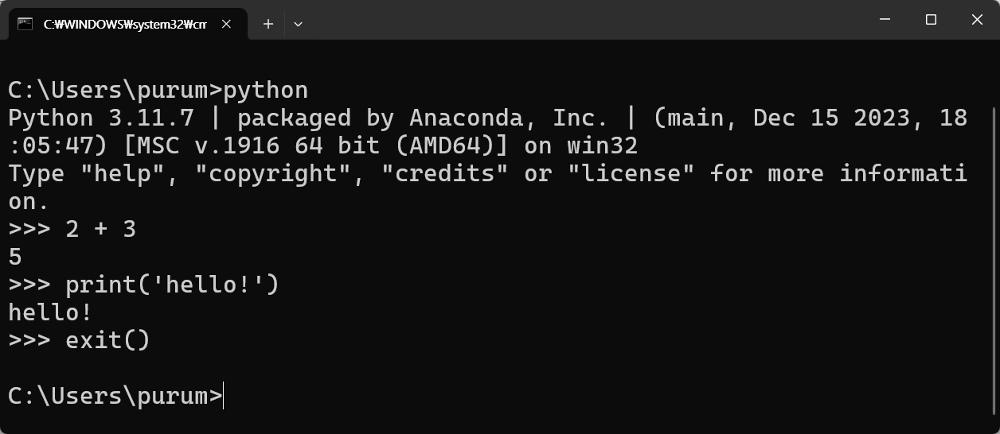

| 1. 키보드에서 windows + R 누른 후 cmd 입력 후 Enter |
| 2. python 입력후 Enter |
| 3. 파이썬 명령문 입력 후 Enter |
 |
| 4. 파이썬 실행 프로그램 종료 방법 : exit() 입력후 Enter |
|  |
| 1. 키보드에서 windows + R 누른 후 cmd 입력 후 Enter |
| 2. cd c:\test 입력후 Enter (파일이 저장될 작업 폴더는 자유롭게 지정함) |
| 3. jupyter lab 입력 후 Enter |
| 4. jupyter lab을 실행시키는 프로그램 실행되고 웹브라우저 창이 열림(웹브라우저창 실행을 위해 터미널창을 종료하면 안됨) |
| 5. File > New > Notebook 선택 |
| 6. 파이썬 명령문 입력후 Shift + Enter |
| 7. 파일 저장을 위해 Ctrl + S 누름 |
| 1. 탐색기창에서 작업 폴더로 이동한 후 Shift + 마우스 오른쪽 버튼 클릭 |
| 2. 실행된 커맨드창에서 jupyter lab 입력 후 Enter |
| 3.새로운 노트북 생성을 위해 File > New > Notebook 또는 다음 방법 |
| 1. File > New > Terminal 선택 |
| 2. 새로운 터미널 창 열림 |
| 1. File > New > Python File 선택 |
 |
| 2. 새로운 스크립트 파일 생성 |
 |
| 3. Ctrl + S > 파일이름 입력 > Enter |
| 4. 파이썬 명령문 입력 후 저장(Ctrl+S) |
| 5. 새 탭(+) 클릭 |
| 6. Terminal 선택 |
| 7. python exam02.py 입력 후 Enter |